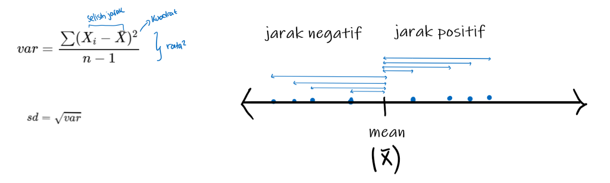
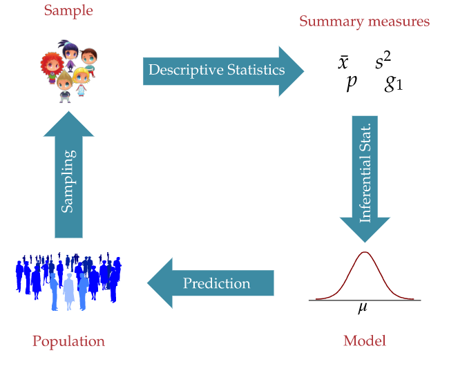
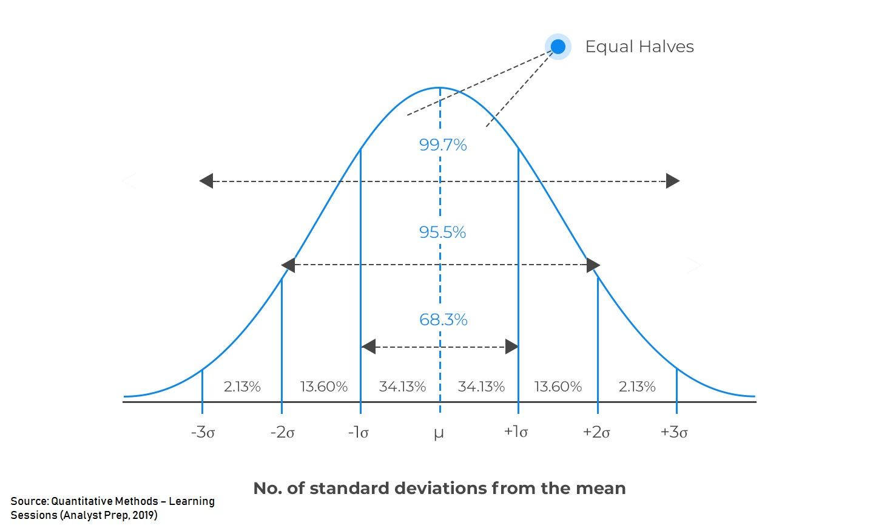
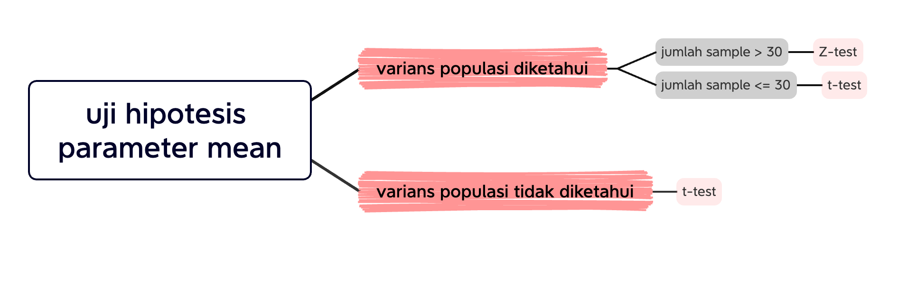

Coursebook: Python for Data Analysts & Practical Statistics
- Part of DSS: Causal Inference for Business Decisions: Understanding Cause and Effect
- Course Length: 12 Hours
- Last Updated: November 2024
- Developed by Algoritma's product division and instructors team
Background¶
DSS ini dirancang untuk semua orang yang tertarik untuk mempelajari cara mengetahui hubungan sebab-akibat dalam data yang berkaitan dengan bisnis. Dengan berfokus pada konsep-konsep utama causal inference, DSS ini menjelaskan kepada para peserta bagaimana membedakan antara korelasi dan sebab-akibat, menerapkan model statistik, dan membuat keputusan yang lebih tepat berdasarkan analisis data.
Training Objectives¶
Python Programming Basics
- Introduction to Python for data science
- Working with Visual Studio Code IDE
- Descriptive statistics using Pandas
Practical Statistics
- Measure of central tendency
- Measure of spreads
- Correlation
- Normal distribution
- Probability density function
- Probability mass function
- Hypothesis testing
- T-test
- ANOVA (F-Test)
Pemrograman Dasar Python¶
Mempersiapkan Environment Anaconda¶
Membuat virtual environment baru:
Buka Anaconda Prompt
Buat virtual environment baru dengan:
conda create -n <ENV_NAME> python=<PYTHON_VERSION>Contoh:
conda create -n dss_causality python=3.8Aktifkan virtual environment baru dengan:
conda activate <ENV_NAME>For example:
conda activate dss_causalityInstall library dan package yang dibutuhkan dengan command.
pip install -r requirements.txt
Bekerja dengan Jupyter Notebook¶
Markdown Cell dan Code Cell¶
Terdapat dua tipe cell dalam notebook:
Markdown Cell¶
Markdown: untuk menuliskan narasi
Berikut ini adalah cell markdown. Terdapat beberapa hal yang dapat dilakukan, seperti membuat beberapa hal berikut ini:
Heading
Pada bagian ini dapat ditambahkan heading dengan menambahkan hashtag
#.#-> Heading 1##-> Heading 2###-> Heading 3
Emphasis
Ketika ingin mengatur jenis tulisan dengan memberikan karakter yang lebih tegas kita bisa memanfaatkan
*.- kata -> untuk mengatur tulisan menjadi Italic
- kata -> untuk mengatur tulisan menjadi Bold
- kata -> untuk mengatur tulisan menjadi Italic & Bold
Bullets
Untuk membuat beberapa point, terdapat beberapa metode yang bisa digunakan.
- Untuk membuat point dalam bentuk angka, bisa menggunakan angka 1.
- Untuk membuat point dalam bentuk bullets, bisa menggunakan - atau *.
Code Cell¶
Code: untuk menuliskan script code
💡 symbol # pada cell code berarti adalah sebuah comment. Comment pada cell code tidak dijalankan
Contoh Code Cell
# ini adalah cell code
print("Hello 2024!!")
Hello 2024!!
1 + 1
2
Command Mode dan Edit Mode¶
1️⃣ Command Mode
- B: Menambahkan cell baru di Bawah (Below)
- A: Menambahkan cell baru di Atas (Above)
- DD: Delete cell
- C: Copy cell
- V: Paste cell
- Y: Mengubah ke
codecell - M: Mengubah ke
markdowncell - Enter/Double Click: Mengubah command mode menjadi edit mode
2️⃣ Edit Mode
- Ctrl + Enter: eksekusi satu cell
- Shift + Enter: eksekusi satu cell kemudian pindah pada cell selanjutnya
- Esc: Mengubah edit mode menjadi command mode
Variabel & Keywords¶
Mari kita telaah konsep paling fundamental dalam bahasa pemrograman: variabel.
Variabel adalah wadah untuk menyimpan sebuah nilai. Simpelnya, variabel adalah nama yang mengacu pada sebuah nilai. Dimana ketika nilai ini ingin kita gunakan, kita dapat memanggilnya dengan nama variabel yang telah kita buat.
# variabel = nilai
dss_name = "DSS: Causal Inference for Business Decisions"
print(dss_name)
DSS: Causal Inference for Business Decisions
Sebagai catatan, seperti bahasa pemrograman yang lainnya, Python bersifat case-sensitive, sehingga dss_name dan DSS_Name dimaknai berbeda sehingga akan dianggap variabel yang berbeda pula.
## code here
'dss_name' == 'dss_name'
True
# True = "variable error"
Kode di atas mengembalikan True sebagai output. Cobalah untuk membuat variabel baru dan gunakan True sebagai namanya. kemudian lihat apa yang akan terjadi.
SyntaxError: can't assign to keyword
Keywords adalah kata kunci yang sudah ditetapkan oleh Python sebagai nama yang tidak bisa dipakai baik untuk penamaan fungsi, variabel, dan lainnya. Keyword ditulis dalam lower-case (huruf kecil semua) kecuali keyword True, False, dan None. Sejauh ini (Python 3.10) keyword yang ada pada Python adalah sebagai berikut:
# Cek daftar keyword
import keyword
keyword.kwlist
['False', 'None', 'True', 'and', 'as', 'assert', 'async', 'await', 'break', 'class', 'continue', 'def', 'del', 'elif', 'else', 'except', 'finally', 'for', 'from', 'global', 'if', 'import', 'in', 'is', 'lambda', 'nonlocal', 'not', 'or', 'pass', 'raise', 'return', 'try', 'while', 'with', 'yield']
💡 NOTES
Syarat dan ketentuan dalam memberikan nama variable pada Python:
- Menggunakan kombinasi dari huruf kapital (A-Z), huruf nomina (a-z), angka (0-9).
- Special character
!, $ , &, dlltidak dapat digunakan dalam penamaan variabel. - Tidak boleh menggunakan angka di awal.
- Bersifat case-sensitive sehingga penamaan variable
algoritma,ALGORITMA, danAlgoritmaadalah 3 variable yang berbeda - Tidak boleh menggunakan keyword pada Python
Introduction to Pandas Library¶
Working with Dataframe¶
pandasadalah library yang powerful sebagai tools analisis data dan struktur pada Python.pandasmampu mengolah data menjadi mudah karena mempunyai objek bernama DataFrame.pandasmemiliki function yang mampu mengolah dataframe dengan menerapkan berbagai operasi dan teknik seperti join, agregasi, grouping, dan lain sebagainya
Lebih lengkapnya silahkan kunjungi official documentation
Untuk menggunakan pandas, kita perlu import terlebih dahulu library dengan cara berikut ini:
import pandas as pd
# print(pd.__version__)
Read Data¶
Untuk membaca data atau file dengan format .csv dapat menggunakan method .read_csv().
Bacalah data CC.csv yang berada dalam folder data_input
Sintaks:
pandas.read_csv("path/data")
cc = pd.read_csv('data_input/CC.csv')
cc.head()
| Income | Limit | Rating | Cards | Age | Education | Gender | Student | Married | Ethnicity | Balance | |
|---|---|---|---|---|---|---|---|---|---|---|---|
| 0 | 14.891 | 3606 | 283 | 2 | 34 | 11 | Male | No | Yes | Caucasian | 333 |
| 1 | 106.025 | 6645 | 483 | 3 | 82 | 15 | Female | Yes | Yes | Asian | 903 |
| 2 | 104.593 | 7075 | 514 | 4 | 71 | 11 | Male | No | No | Asian | 580 |
| 3 | 148.924 | 9504 | 681 | 3 | 36 | 11 | Female | No | No | Asian | 964 |
| 4 | 55.882 | 4897 | 357 | 2 | 68 | 16 | Male | No | Yes | Caucasian | 331 |
Deskripsi Kolom
Income: Besaran gaji nasabah per tahun (dalam $10000)Limit: Besaran kredit limitRating: Skor yang diberikan kepada individu berdasarkan kelayakan kreditnya. Semakin besar maka semakin baikCards: Jumlah banyaknya kartu kredit yang dimiliki oleh nasabahAge: Usia nasabahEducation: Level/lamanya pendidikan yang ditempuh oleh nasabahGender: Jenis kelamin nasabah- Male
- Female
Student: Apakah nasabah seorang pelajar atau bukan- Yes $\rightarrow$ Pelajar
- No $\rightarrow$ Bukan pelajar
Married: Status pernikahan- Yes $\rightarrow$ Sudah menikah
- No $\rightarrow$ Belum menikah
Ethnicity: Etnis nasabah- African American
- Asian
- Caucasian
Balance: Rata-rata jumlah saldo kartu kredit
3.3 Head & Tail¶
Daripada melihat keseluruhan data, lebih baik kita "mengintip" sebagian baris yang dapat merepresentasikan bentuk keseluruhan data.
Metode yang dapat digunakan:
head(): Menampilkan beberapa baris teratas (default 5)tail(): Menampilkan beberapa baris terakhir (default 5)
# code here
cc.head()
| Income | Limit | Rating | Cards | Age | Education | Gender | Student | Married | Ethnicity | Balance | |
|---|---|---|---|---|---|---|---|---|---|---|---|
| 0 | 14.891 | 3606 | 283 | 2 | 34 | 11 | Male | No | Yes | Caucasian | 333 |
| 1 | 106.025 | 6645 | 483 | 3 | 82 | 15 | Female | Yes | Yes | Asian | 903 |
| 2 | 104.593 | 7075 | 514 | 4 | 71 | 11 | Male | No | No | Asian | 580 |
| 3 | 148.924 | 9504 | 681 | 3 | 36 | 11 | Female | No | No | Asian | 964 |
| 4 | 55.882 | 4897 | 357 | 2 | 68 | 16 | Male | No | Yes | Caucasian | 331 |
Tipe Data pandas¶
- Dataframe merupakan tabel/data tabular dua dimensi yaitu baris dan kolom.
- Dataframe terdiri dari beberapa Series (kolom).
- Dalam satu series harus memiliki tipe data yang sama.
pandasakan menentukan tipe data dari masing-masing Series, tapi hasil dari pandas tidak selalu benar.
Berikut rangkuman tipe data pandas:
Note: Fokus pada kolom Pandas dtype dan Usage
| Pandas dtype | Usage |
|---|---|
| object | Text or mixed numeric and non-numeric values |
| int64 | Integer numbers |
| float64 | Floating point numbers |
| bool | True/False values |
| datetime64[ns] | Date and time values |
| timedelta[ns] | Differences between two datetimes |
| category | Finite list of text values |
Referensi: Overview of Pandas Data Types
Tipe data Pandas yang umum digunakan:
int64: Integer (bilangan bulat, tanpa koma)float64: Bilangan desimal (berkoma)object: Text (string)category: Kategorikaldatetime64[ns]: Data waktu
Karakteristik tipe data category :
- Dapat dikelompokkan menjadi beberapa kelompok (category)
- Nilainya berulang
Saat kita membaca data dengan pd.read_csv(), pandas akan mencoba menentukan tipe data dari setiap kolom. Lakukan investigasi awal untuk melihat struktur data terhadap object DataFrame dengan menggunakan method .info().
# Cek tipe data
cc.info()
<class 'pandas.core.frame.DataFrame'> RangeIndex: 400 entries, 0 to 399 Data columns (total 11 columns): # Column Non-Null Count Dtype --- ------ -------------- ----- 0 Income 400 non-null float64 1 Limit 400 non-null int64 2 Rating 400 non-null int64 3 Cards 400 non-null int64 4 Age 400 non-null int64 5 Education 400 non-null int64 6 Gender 400 non-null object 7 Student 400 non-null object 8 Married 400 non-null object 9 Ethnicity 400 non-null object 10 Balance 400 non-null int64 dtypes: float64(1), int64(6), object(4) memory usage: 34.5+ KB
💡 NOTES
Dengan menggunakan method .info(), kita dapat memeriksa informasi lengkap dari DataFrame kita:
- Dimensi data: jumlah baris dan kolom (
.shape) - Nama kolom (
.columns) - Tipe data setiap kolom (
.dtypes) - Penggunaan memori
Kolom manakah yang memiliki format tipe data yang belum sesuai?
Jawaban:
Gender,Student,Married,Ethnicity
Convert Data Types¶
Convert Category¶
Untuk mengubah tipe data pada pandas, dapat menggunakan method astype().
Sintaks
df['column_name'] = df['column_name'].astype('new_data_types')
✏️ NOTES
Jika ingin merubah tipe data beberapa kolom ke 1 tipe data yang sama, dapat menggunakan list seperti berikut
columns = ['kolom1', 'kolom2']
df[columns] = df[columns].astype('datatype')
# code here
# cat_column = ['nilai1', 'nilai2']
cat_column = ['Gender', 'Student', 'Married', 'Ethnicity']
cc[cat_column] = cc[cat_column].astype('category')
cc.info()
<class 'pandas.core.frame.DataFrame'> RangeIndex: 400 entries, 0 to 399 Data columns (total 11 columns): # Column Non-Null Count Dtype --- ------ -------------- ----- 0 Income 400 non-null float64 1 Limit 400 non-null int64 2 Rating 400 non-null int64 3 Cards 400 non-null int64 4 Age 400 non-null int64 5 Education 400 non-null int64 6 Gender 400 non-null category 7 Student 400 non-null category 8 Married 400 non-null category 9 Ethnicity 400 non-null category 10 Balance 400 non-null int64 dtypes: category(4), float64(1), int64(6) memory usage: 24.1 KB
Practical Statistics¶
Descriptive Statistics¶
Descriptive Statistics membantu kita menggambarkan karakteristik dari data, sehingga berguna dalam proses Exploratory Data Analysis (EDA). Terdapat 3 hal pada descriptive statistics:
- Ukuran pemusatan data (Measure of Central Tendency)
- Ukuran penyebaran data (Measure of Spread)
- Hubungan antar data (Variable Relationship)
Measure of Central Tendency¶
Ukuran pemusatan data adalah suatu nilai yang cukup untuk mewakili seluruh nilai pada data.
Mean (Rata-rata)
- Mean (rata-rata) adalah jumlah semua nilai data dibagi dengan banyaknya data.
- Kegunaan: Mean sering digunakan untuk mewakili keseluruhan data, terutama ketika data terdistribusi secara normal (tidak ada nilai ekstrem yang terlalu menonjol).
Median
- Median adalah nilai tengah dari sekumpulan data yang telah diurutkan dari yang terkecil hingga terbesar.
- Kegunaan: Median lebih baik digunakan ketika ada nilai ekstrem dalam data, karena median tidak terlalu dipengaruhi oleh nilai-nilai yang sangat besar atau sangat kecil.
Modus
- Modus adalah nilai yang paling sering muncul dalam suatu data.
- Kegunaan: Modus berguna untuk melihat nilai yang paling umum atau populer dalam suatu data, digunakan untuk data kategorikal.
Kita dapat memanfaatkan describe() untuk melihat nilai-nilai dari Central Tendency. Method describe() menampilkan 8 ringkasan statistika deskriptif. Secara default menampilkan ringkasan untuk kolom numerik.
#code here
cc.describe()
| Income | Limit | Rating | Cards | Age | Education | Balance | |
|---|---|---|---|---|---|---|---|
| count | 400.000000 | 400.000000 | 400.000000 | 400.000000 | 400.000000 | 400.000000 | 400.000000 |
| mean | 45.218885 | 4735.600000 | 354.940000 | 2.957500 | 55.667500 | 13.450000 | 520.015000 |
| std | 35.244273 | 2308.198848 | 154.724143 | 1.371275 | 17.249807 | 3.125207 | 459.758877 |
| min | 10.354000 | 855.000000 | 93.000000 | 1.000000 | 23.000000 | 5.000000 | 0.000000 |
| 25% | 21.007250 | 3088.000000 | 247.250000 | 2.000000 | 41.750000 | 11.000000 | 68.750000 |
| 50% | 33.115500 | 4622.500000 | 344.000000 | 3.000000 | 56.000000 | 14.000000 | 459.500000 |
| 75% | 57.470750 | 5872.750000 | 437.250000 | 4.000000 | 70.000000 | 16.000000 | 863.000000 |
| max | 186.634000 | 13913.000000 | 982.000000 | 9.000000 | 98.000000 | 20.000000 | 1999.000000 |
Ringkasan:
- Count: Banyaknya baris pada dataframe
- Mean: Rata-rata nilai
- Standard Deviation: Jarak rata-rata antara data ke mean (titik pusat data)
- Minimum Value: Nilai terkecil dari keseluruhan data
- 25th Percentile (Q1)
- 50th Percentile (Q2/Median)
- 75th Percentile (Q3)
- Maximum Value: Nilai terbesar dari keseluruhan data
✏️ NOTES
Jika ingin melihat deskripsi dari tipe data category, dapat memasukkan parameter include = 'category'
cc.describe(include = 'category')
| Gender | Student | Married | Ethnicity | |
|---|---|---|---|---|
| count | 400 | 400 | 400 | 400 |
| unique | 2 | 2 | 2 | 3 |
| top | Female | No | Yes | Caucasian |
| freq | 207 | 360 | 245 | 199 |
Ringkasan:
- count: Jumlah data
- unique: Nilai unik/jumlah kategori di dalam kolom tersebut
- top: Modus / kategori terbanyak.
- freq: Jumlah kategori modus di kolom tersebut.
💡 Insight: __
Measure of Spread¶
Ukuran penyebaran data mewakili seberapa menyebar atau beragam data kita.
Variance
- Variance menggambarkan seberapa beragam suatu data numerik tunggal menyebar dari pusat datanya
- Keguanaan: Menggambarkan seberapa data menyebar dari rata-ratanya (beragam). Skala variance dari 0 sampai tak hingga. Semakin besar nilainya maka artinya semakin menyebar dari pusat datanya (mean).
- Cara Kerja: Rata-rata dari kuadrat selisih antara setiap nilai data dengan rata-rata (mean) dari data tersebut.
- Fungsi Python:
.var() - Kelemahan: Tidak dapat diinterpretasikan karena satuannya dalam kuadrat.
Standard Deviasi:
- Standard deviation menggambarkan seberapa jauh simpangan nilai yang dianggap umum, dihitung dari titik pusat (mean) nya.
- Kegunaan: Dapat untuk menentukan apakah suatu nilai dikatakan menyimpang dari rata-rata namun masih dikatakan umum, atau sudah tidak umum.
- Cara Kerja: Mengakarkan nilai variance
- Fungsi Python:
.std() - Kelebihan: Karena dihitung dengan mengakarkan variance, satuannya sudah sesuai dengan data asli dan bisa diinterpretasikan.

Contoh:
Sebuah Bank sedang dalam rencana membuka kantor cabang baru. Mereka menyeleksi daerah mana yang cocok untuk cabang baru mereka. Mereka mengumpulkan informasi harga sewa bangunan di daerah A dan B sebagai berikut:
# harga dalam satuan juta
harga_A = pd.Series([400,410,420,400,410,420,400,410,420,400,410,420,400])
harga_B = pd.Series([130,430,650,540,460,320,380,550,650,470,330,140,270])
Bandingkan rata-rata harga bangunan kedua daerah:
# code here
print(harga_A.mean())
print(harga_B.mean())
409.2307692307692 409.2307692307692
Mari bandingkan dari sisi lain, yaitu tingkat keberagaman data (variance). Daerah mana yang harganya lebih bervariasi?
# code here
print(harga_A.var())
print(harga_B.var())
74.35897435897435 28707.692307692312
# standar deviasi harga_A & harga_B
print(harga_A.std())
print(harga_B.std())
8.623164985025761 169.43344506824002
Interpretasi nilai normal/wajar : mean +- sd (karena satuan mean dan sd sama, yaitu jutaan rupiah)
- Harga sewa pada daerah A umumnya jatuh pada interval 400 - 417
- Harga sewa pada daerah B umumnya jatuh pada interval 239 - 578
Variable Relationship¶
Karena pada data kita punya banyak kolom atau variabel, kita juga ingin tahu hubungan antar variabel dalam data kita.
Ukuran yang digunakan untuk melihat hubungan linear antara dua variabel numerik.
Two variables is associated if distribution of one depends on the value of the other. We can look the association with visualization or statistic measure.
-
- Plot yang menampilkan hubungan antara 2 variable numerik. Untuk setiap titik data, nilai variable direpresentasikan pada sumbu X, yang kedua pada sumbu Y.
- Fungsi Python:
df.plot.scatter(x = 'Kolom_Numerik1', y = 'Kolom_Numerik2')
Covariance
- Covariance menunjukkan bagaimana variansi 2 data (variable yang berbeda) bergerak bersamaan.
- Fungsi Python:
.cov() - Kegunaan:
- Nilai covariance positif mengindikasikan pergerakan nilai yang searah / berbanding lurus.
- Nilai covariance negatif mengindikasikan pergerakan nilai yang berbalik arah.
- Kelemahan: Tidak memiliki batasan nilai untuk mengukur kekuatan hubungan antar dua variabel (-inf s.d inf), sehingga kita hanya bisa mengetahui apakah hubungannya positif atau negatif
Correlation
- Correlation memampatkan nilai covariance dari -inf s.d inf menjadi -1 s.d 1 sehingga bisa diukur kekuatan hubungan antar data (variable).
- Fungsi Python:
.corr() - Kegunaan:
- -1 artinya korelasi negatif kuat
- 0 artinya tidak berkorelasi
- 1 artinya korelasi positif kuat

Ilustrasi correlation:

Contoh:
Adakah korelasi antara Income dengan Rating pada data cc . Bagaimana hubungan dan kekuatannya?
# Scatter plot
cc.plot.scatter(x='Income',
y='Rating');
![No description has been provided for this image]()
# Nilai covariance
cc[['Income', 'Rating']].cov()
| Income | Rating | |
|---|---|---|
| Income | 1242.158791 | 4315.492940 |
| Rating | 4315.492940 | 23939.560301 |
# Nilai korelasi
cc[['Income', 'Rating']].corr()
| Income | Rating | |
|---|---|---|
| Income | 1.000000 | 0.791378 |
| Rating | 0.791378 | 1.000000 |
💡 Insight: __
Inferential Statistics¶
Inferential Statistics membantu kita menarik kesimpulan tentang keseluruhan data (populasi) dengan menggunakan sebagian informasinya saja (sampel)

Setiap data memiliki distribusi. Distribusi data yang spresial dan berperan dalam inferential statistics adalah distribusi normal
Normal Distribution¶

Karakteristik:
- Kurva membentuk lonceng simetris, artinya puncaknya adalah titik pusat (mean = median)
- Luas area dibawah kurva = 1 (menyatakan probabilitas)
- Persebaran data:
- 68% data berada di rentang +- 1 standar deviasi dari mean
- 95% data berada di rentang +- 2 standar deviasi dari mean
- 99.7% data berada di rentang +- 3 standar deviasi dari mean
- Standar normal baku adalah distribusi normal dimana mean = 0 dan standar deviasi = 1.
Distribusi normal banyak digunakan pada inferensial statistik karena dicetuskannya Central Limit Theorem.
Semakin bertambahnya jumlah sampel yang diambil secara acak, maka distribusi rata-rata sampel akan mengikuti distribusi normal
[Additional] Animasi CLT
Karakteristik distribusi normal inilah yang dimanfaatkan untuk penghitungan inferensial statistik:
- Menghitung Probabilitas:
- Probability Mass Function $\rightarrow$ diskrit/kategorik (contoh: Menghitung probability kemunculan angka 1 ketika melempar dadu)
- Probability Density Function $\rightarrow$ kontinu/numerik
- Membuat Confidence Interval
- Uji Hipotesis
Hypothesis Testing¶
Uji hipotesis bertujuan untuk menguji dugaan. Uji hipotesis sering disebut juga sebagai uji signifikansi yang digunakan untuk menguji apakah suatu treatment memberikan perubahan/pengaruh signifikan terhadap suatu kondisi.
Hypothesis Testing in Causal Inference¶
Uji hipotesis tidak bisa menghitung hubungan sebab-akibat pada suatu kasus. Namun, uji hipotesis bisa digunakan untuk menentukan signifikasi efek suatu treatment/perlakuan dan membandingkan distribusi dua kelompok data yang berbeda. Hasil dari uji hipotesis akan menjawab apakah perbedaan tersebut hanya suatu kebetulan atau memang benar-benar efek sebab akibat.
Istilah-istilah:
Hipotesis: dugaan sementara yang harus diuji
- $H_0$ / null hypothesis:
- kondisi awal
- memiliki unsur kesamaan (=, >=, <=)
- $H_1$ / alternative hypothesis:
- kontradiktif dengan $H_0$
- $H_0$ / null hypothesis:
$\alpha$:
- tingkat signifikansi yaitu tingkat error yang masih bisa ditoleransi
- umumnya 0.05
$1-\alpha$: tingkat kepercayaan
$p-value$:
- hasil perhitungan statistik yang menunjukkan peluang data sampel terjadi dengan kondisi H0.
Pengambilan kesimpulan:
- Jika $p-value$ < $\alpha$, maka tolak $H_0$ -> terima h1
- Jika $p-value$ > $\alpha$, maka gagal tolak $H_0$ -> terima h0
Contoh Hipotesis
- Hipotesis dua arah (!=)
- $H_0$ : Rata-rata saldo rekening tidak berbeda secara signifikan antara nasabah yang menggunakan layanan internet banking dan yang tidak menggunakan layanan tersebut. (=)
- $H_1$ : Rata-rata saldo rekening berbeda secara signifikan antara nasabah yang menggunakan layanan internet banking dan yang tidak menggunakan layanan tersebut. (!=)
- Hipotesis satu arah (<)
- $H_0$ : Penambahan teller tidak memberikan perbedaan durasi pembayaran (>=)
- $H_1$ : Penambahan teller menurunkan durasi pembayaran (<)
- Hipotesis satu arah (>)
- $H_0$: Penerapan diskon tidak memberikan perbedaan jumlah pembelian produk (<=)
- $H_1$: Penerapan diskon meningkatkan jumlah pembelian produk (>)
Z-Test¶
Uji hipotesis yang menggunakan Z-test bila:
- standar deviasi populasi diketahui
- jumlah sampel banyak (n > 30)
Menggunakan fungsi ztest()
Gunakan fungsi ztest() untuk menghitung z-statistics dan p-value jika data disimpan dalam bentuk Dataframe.
zstats, pval = ztest(x1=...,
value = ...,
alternative = ...)
parameter :
x1: number of observationsvalue: rata-rata dari x1 di $H_0$alternative:- jika $H_1$ tidak sama (!=) dengan nilai tertentu, isi dengan
two-sided - jika $H_{1}$ lebih besar (>) dari suatu nilai, gunakan
larger - jika $H_{1}$ lebih kecil (<) dari suatu nilai, gunakan
smaller
- jika $H_1$ tidak sama (!=) dengan nilai tertentu, isi dengan
T-test¶
Uji hipotesis menggunakan T-test jika:
- standar deviasi populasi tidak diketahui atau
- jumlah sampel sedikit (n <= 30)
Bentuk t-distribution mirip dengan normal distribution, hanya saja lebih landai ketika jumlah sampel sedikit:

Contoh Kasus
Mari kita asumsikan Bank ABC memiliki dua kelompok nasabah bank, yaitu kelompok yang memiliki behavior scoring tinggi dan kelompok yang memiliki behavior scoring rendah.
Diketahui data saldo rekening antara kedua kelompok sebagai berikut:
behavior_score_high = pd.Series([30.4, 52.7, 70.6, 55.7, 56.3, 34.2, 59.6, 42.3, 21.1, 50.5, 12.2, 58.6, 12.0, 56.1, 49.4, 60.9, 60.0, 35.3, 15.0, 50.3])
behavior_score_low = pd.Series([6.5, 13.3, 6.8, 9.2, 10.0, 1.5, 21.7, 16.2, 5.9, 25.0, 18.4, 12.6, 22.2, 22.0, 21.6, 20.5, 19.4, 14.5, 12.6, 12.0])
Tujuan kita adalah menguji apakah terdapat perbedaan signifikan dalam rata-rata saldo rekening antara kedua kelompok tersebut?
Jawab:
I. Tentukan hipotesis
- $H_0$: Rata-rata saldo rekening antara kelompok dengan behavior scoring tinggi dan kelompok dengan behavior scoring rendah tidak berbeda secara signifikan.
- $H_1$: Terdapat perbedaan signifikan dalam rata-rata saldo rekening antara kedua kelompok.
II. Hitung P-value dengan ttest_ind()
Gunakan fungsi ttest_ind() untuk menghitung t-statistics dan p-value dua independent sample
t_stats, pval = ttest_ind(a= ...,
b= ...,
alternative = ...)
parameter:
a: data atau observasi sampel berbentuk Series atau arrayb: data atau observasi sampel berbentuk Series atau arrayalternative: tergantung hypothesis alternative ($H_1$)- jika $H_1$ tidak sama (!=) dengan nilai tertentu, isi dengan
two-sided - jika $H_1$ lebih kecil (<) dengan nilai tertentu, isi dengan
less - Jika $H_1$ lebih besar (>) dengan nilai tertentu, isi dengan
greater
- jika $H_1$ tidak sama (!=) dengan nilai tertentu, isi dengan
# code here
from scipy import stats
t_test = stats.ttest_ind(a = behavior_score_high,
b = behavior_score_low,
alternative = 'two-sided') #dilihat dari H1 -> ada perbedaan signifikan
#formatting the result
result=f'{t_test[1]:.10f}'
print("The result is=",result)
The result is= 0.0000000309
III. Bandingkan P-value dengan alpha
Dalam membuat keputusan uji statistik, kita dapat membandingan p-value dengan alpha:
- selang kepercayaan = 95%
- alpha = 5% -> 0.05
p-value = 0.0000003715 (<) alpha/2 = 0.025, maka tolak $H_0$
Note: aplha dibagi dua karena H1 two sided
IV. Kesimpulan
Dengan menggunakan tingkat kepercayaan 95% dapat disimpulkan terdapat perbedaan signifikan dalam rata-rata saldo rekening antara kedua kelompok.
Summary penggunaan hipotesis testing:

ANOVA (F-Test)¶
ANOVA (Analysis of Variance) adalah metode statistik yang digunakan untuk menganalisis perbedaan antara rata-rata kelompok dalam suatu dataset. Tujuan utamanya adalah untuk mengetahui apakah terdapat perbedaan yang signifikan antara rata-rata kelompok-kelompok tersebut.
ANOVA digunakan untuk membandingkan rata-rata 2 atau lebih kelompok.
Hipotesis:
- $H_0$: Rata-rata semua kelompok sama.
- $H_1$: Setidaknya ada satu rata-rata kelompok yang berbeda.
Jika p-value di bawah 0.05, maka tolak $H_0$.
Untuk menerapkan Anova (dalam kasus ini One-way Anova) dapat menggunakan tahapan berikut:
- Membuat model OLS
model_ols = ols('Nilai_numerik ~ Kategori', data = df).fit()
- Objek model OLS sebagai inputan fungsi
sm.stats.anova_lm()
anova_table = sm.stats.anova_lm(model_ols)
- Melihat p-value (PR(>F)) kemudian menentukan tolak $H_0$ atau gagal tolak $H_0$.
Contoh kasus:
Kita ingin melihat apakah terdapat perbedaan signifikan rata-rata saldo (Balance) antara kelompok Etnis dari nasabah.
import statsmodels.api as sm
from statsmodels.formula.api import ols
mod = ols('Balance ~ Ethnicity',data=cc).fit()
anova_table = sm.stats.anova_lm(mod)
print(anova_table)
df sum_sq mean_sq F PR(>F) Ethnicity 2.0 1.845420e+04 9227.100236 0.043443 0.957492 Residual 397.0 8.432146e+07 212396.618916 NaN NaN
Terlihat pada kolom PR(>F) baris Ethnicity, nilai p-value di atas 0.05. Sehingga, gagal tolak $H_0$ dan dapat diambil kesimpulan bahwa tidak terdapat perbedaan signifikan rata-rata saldo diantara kelompok etnis nasabah.
Further Readings¶
Descriptive Statistics: https://courses.lumenlearning.com/suny-natural-resources-biometrics/chapter/chapter-1-descriptive-statistics-and-the-normal-distribution/
Dealing with small data set: https://measuringu.com/small-n/
t-Distribution and some case examples: https://stattrek.com/probability-distributions/t-distribution.aspx